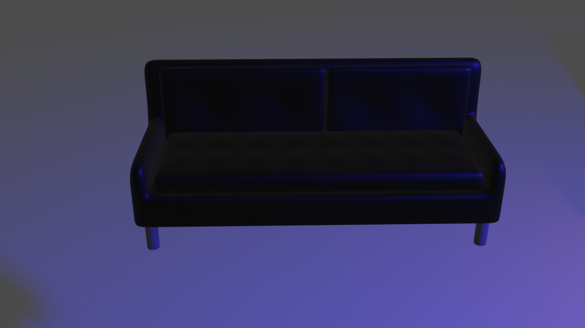
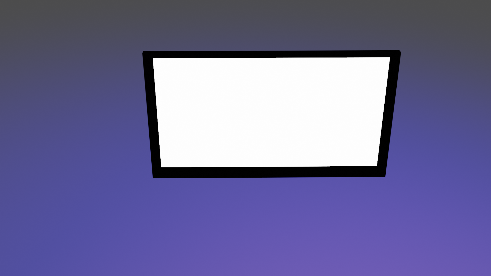

Sedež je bil narejen z devide tool, ki mi omogoča, da sedež razdelim na dele in ga oblikujem v obliko sedeža in ga potem naredim bolj gladkega in še bolj oblikujem. Nato sem dodal noge, ki so iz cilindrov. Sedež sem pobarval na črno, da izgleda temnejše
Mizo sem izdelal samo iz kock, ki sem jih preoblikoval, nato pa sem dodal texturo in pobarval določene dele, da izgleda kot miza.
Televizijo sem izdelal tako, kot mizo samo, da sem mu dodal texturo, ki se sveti in na prvi sliki na strani domov sem dodal tudi sliko sebe, ampak je postrani, ker sem sliko vzel s telefonom.
